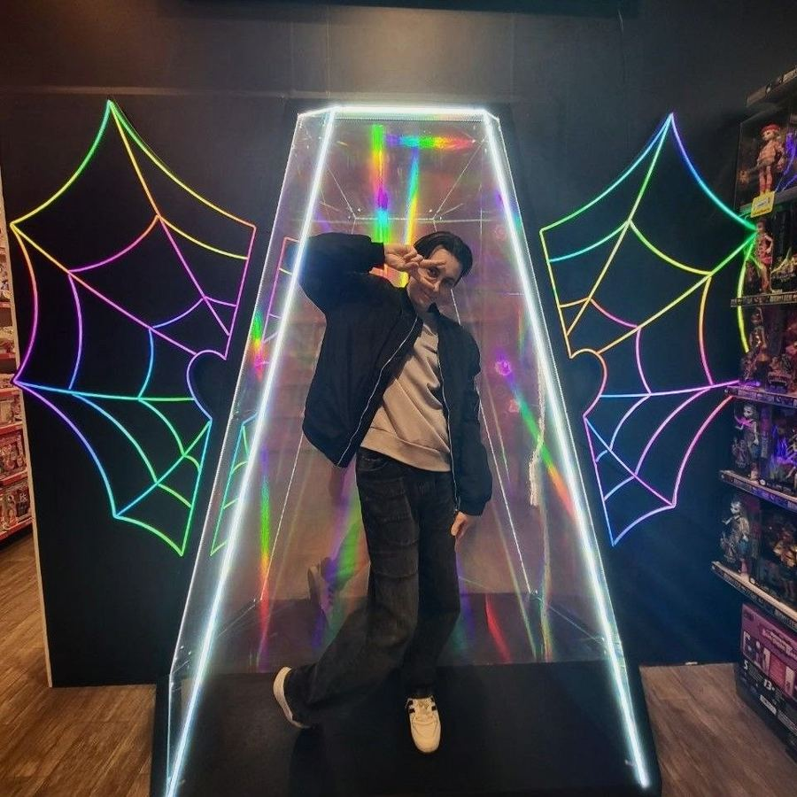
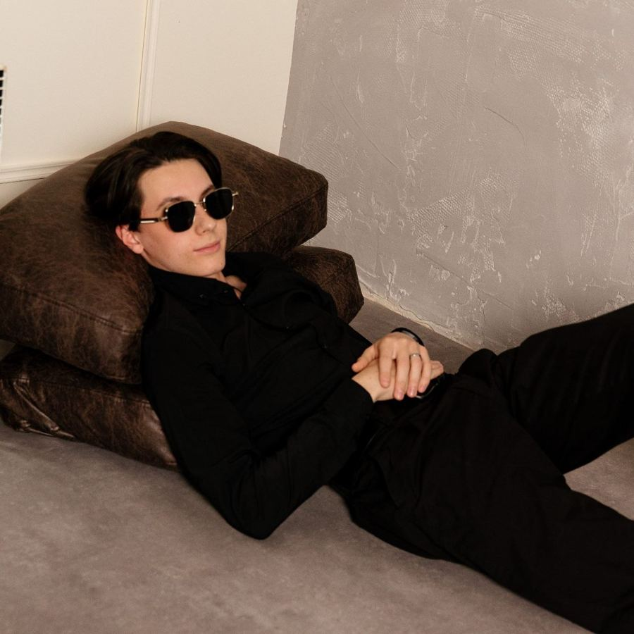
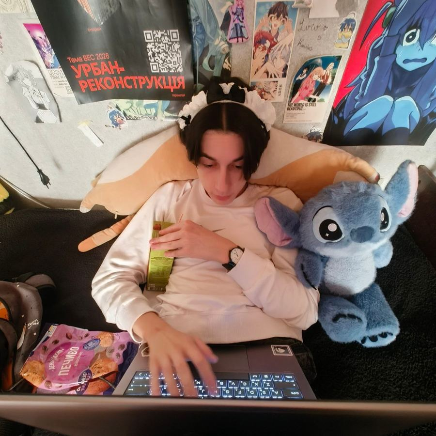

Привіт, я Олексій
Мотивація на позицію IT Resp Одинадцятого хакатону: хто я, чому хакатон і що готовий дати команді.

01Про мене
Вступ
Всім привіт, хто читає цю мотивашку! Мене звати Олексій, я навчаюся у Львівській політехніці на спеціальності «Комп’ютерні науки» (програма проєктування і програмування інтелектуальних систем і пристроїв), і тут розповім, чому подаюся саме на позицію IT Resp Одинадцятого хакатону, які в мене сильні сторони, чим мене чіпляє ця подія та чому я найкраще підходжу на цю роль.
1. Чому саме я?
02BEST і час
2. Чому саме BEST::HACKath0n?
3. Скільки часу я готовий виділити на кортіму?

03Плани та цілі
4. Які маю плани на наступні пів року?
5. Що хочу отримати/набути/розвинути за час кортіми?
04Досвід
6. Мій попередній досвід, що стосується посади, на яку подаюся
Фінал
Я готовий вкладати енергію, підтримувати команду та доводити справи до результату, тож буду радий стати частиною команди Одинадцятого хакатону. Дякую, що дочитали цю мотивашку до кінця і не заснули на середині, обіймаю всіх 6!

Привіт, я Олексій
Мотивація на позицію Content Responsible Одинадцятого хакатону: хто я, чому хакатон і які ідеї готовий принести команді.
01Про мене
Вступ
Всім привіт, хто читає цю мотивашку! Мене звати Олексій, я навчаюся у Львівській політехніці на спеціальності «Комп’ютерні науки». Розповім, чому подаюся на позицію Content Responsible Одинадцятого хакатону, чим мене чіпляє ця роль і чому я можу зробити контент хакатону сильним: від теми й завдань до критеріїв оцінювання.
1. Чому саме я?
02BEST і час
2. Чому саме BEST::HACKath0n?
3. Скільки часу я готовий виділити на кортіму?
03Плани та цілі
4. Як я бачу свої обов’язки?
5. Що хочу отримати/набути/розвинути за час кортіми?
04Досвід
6. Мій попередній досвід, що стосується посади, на яку подаюся
05Тема та критерії
7. Тема хакатону: Resilient Tech
Технології, які працюють, коли все навколо ламається: стійкі до перебоїв зв’язку, електроенергії та перевантажень. Ця тема близька кожному у Львові та в Україні, залишає простір для різних напрямків (offline-first, ШІ локально, енергоефективність, безпека, цивільні сервіси) і дає змогу команді компанії-партнера запропонувати реальні, а не вигадані кейси. До того ж вона одночасно технічно цікава й має очевидну користь, а отже її легко пояснити і учасникам, і менторам, і суддям.
8. Базові критерії оцінювання проєктів
Фінал
Я готовий вкладати енергію, підтримувати команду та доводити справи до результату, тож буду радий стати Content Responsible Одинадцятого хакатону. Дякую, що дочитали цю мотивашку до кінця і не заснули на середині, обіймаю всіх 6!